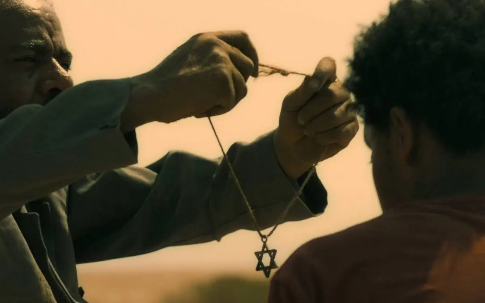
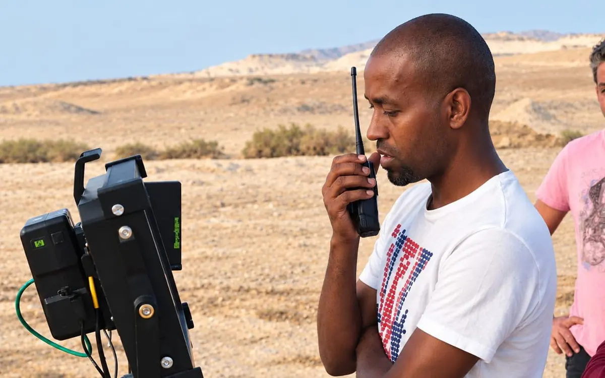

חברת הפקות וידאו · תל אביב · מאז 2010
כל פרויקט הוא יצירה.
פרסומות, סדרות תוכן וסרטים למותגים, לחברות ולגופי תקשורת. מפיק אחד מלווה אתכם מהרעיון ועד הפריים האחרון.
פרסומות, סדרות תוכן וסרטים למותגים, לחברות ולגופי תקשורת. מפיק אחד מלווה אתכם מהרעיון ועד הפריים האחרון.
רגע אחד מתוך כל הפקה.

